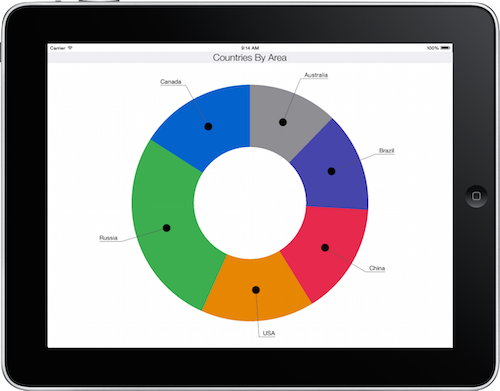

SChartSpokeStyle Class Reference
| Inherits from | NSObject |
| Conforms to | NSCopying |
| Declared in | SChartSpokeStyle.h |
| Availability | Standard Premium |
| Related samples |
Overview
SChartSpokeStyle manages the appearance of spokes for SChartDonutSeries and SChartPieSeries objects.
Spokes provide an alternative way to display labels on a pie or donut chart. Labels are positioned outside the series with a line drawn from them to the center of the slice.

For spokes to be drawn, showSpokes must be enabled.
Spokes can be enabled on a per-slice basis. Please see our user guide for a code sample.
Tasks
Spoke Properties
-
showSpokesSet the visibility of the spokes Default is
propertyNO/false. -
widthWidth of the spoke lines in points. Default is 1.
property -
colorColor of the spoke lines. Default is black.
property -
lengthLength of the spoke, starting from the anchor point. Default is half the slice’s radius + 40.
property -
labelPaddingAmount of space between the label and the line joins, in points. Default is 10.
property
Anchor Circle Properties
-
anchorOffsetStarting point of the spoke relative to the midpoint of the slice, in points. Default is 0.
property -
anchorRadiusThe radius of the circle from which the line extends out of the pie/donut, in points. Default is 5.
property -
anchorColorColor of the circle. Default is black.
property -
– supplementStyleFromStyle:Updates this style object using the settings from the passed-in style.
Properties
anchorColor
Color of the circle. Default is black.
@property (nonatomic, retain) UIColor *anchorColorDeclared In
SChartSpokeStyle.hanchorOffset
Starting point of the spoke relative to the midpoint of the slice, in points. Default is 0.
@property (nonatomic, assign) CGFloat anchorOffsetDeclared In
SChartSpokeStyle.hanchorRadius
The radius of the circle from which the line extends out of the pie/donut, in points. Default is 5.
@property (nonatomic, assign) CGFloat anchorRadiusDeclared In
SChartSpokeStyle.hcolor
Color of the spoke lines. Default is black.
@property (nonatomic, retain) UIColor *colorDeclared In
SChartSpokeStyle.hlabelPadding
Amount of space between the label and the line joins, in points. Default is 10.
@property (nonatomic, assign) CGFloat labelPaddingDeclared In
SChartSpokeStyle.hlength
Length of the spoke, starting from the anchor point. Default is half the slice’s radius + 40.
@property (nonatomic, assign) CGFloat lengthDeclared In
SChartSpokeStyle.h